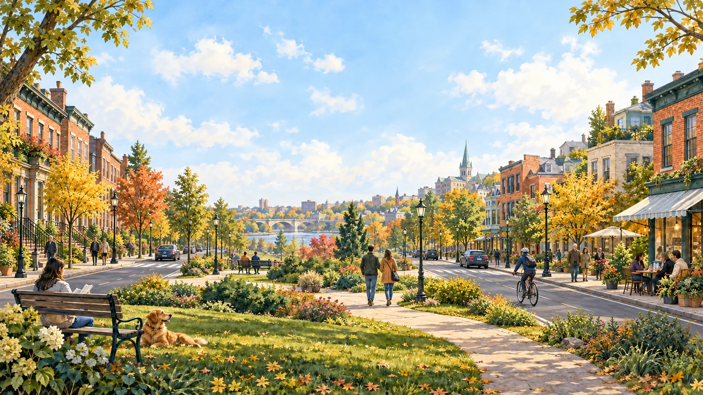
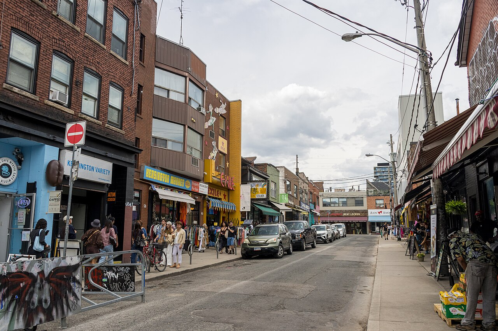

Pick your starting point
Your street, a neighborhood nearby, or somewhere entirely new. Start with any place you’re curious about.

Discover the streets, little favorites, and everyday moments
that make a neighborhood feel like yours.
The coffee spot you keep walking past. A quiet park two streets over. A neighborhood you’ve always meant to visit.
Choose a starting point and see what’s nearby, from familiar favorites to places you’ve never been.
Meet your next little discovery
Kensington Market, TorontoYour street, a neighborhood nearby, or somewhere entirely new. Start with any place you’re curious about.
Tell us what catches your eye. Coffee and food, a little culture, an independent shop, or room to breathe.
Connect a few nearby places into a walk you can take at your own pace.
Start with one of our Toronto collections.
After sign-in, search wherever you’d like to explore.
A few small choices. A world worth exploring.
Your preferences stay on this device. Change them whenever you like.